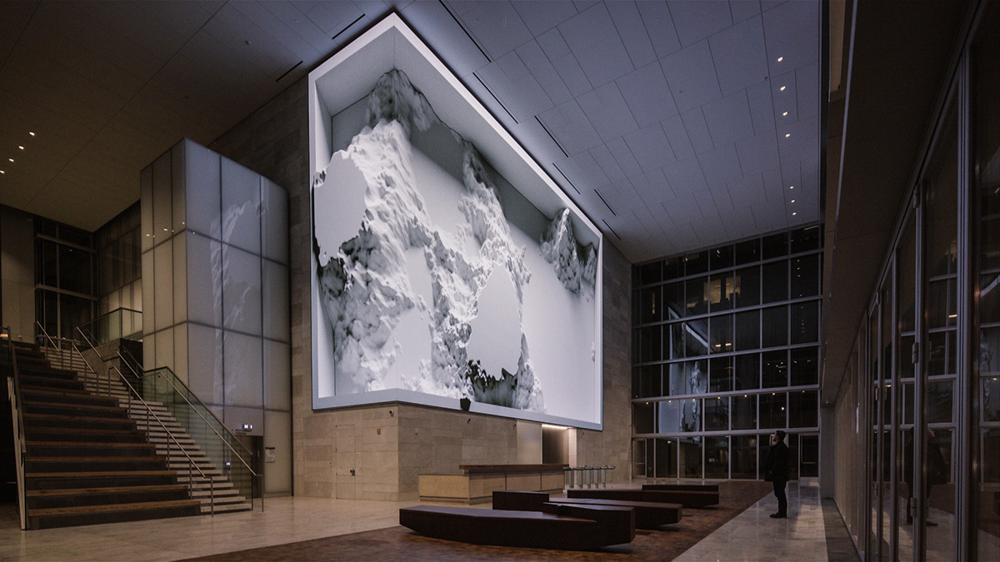

0b09a831762939_566289695daae.jpg
gpt-5.6-luna
unknown대형 로비 벽면에 눈 덮인 산악 지형을 담은 흑백 이미지 또는 부조형 미디어 아트가 액자처럼 설치되어 있다. 짙은 회색과 흰색이 중심이며, 석재 벽·유리창·계단·목재 벤치가 어우러진 넓고 정제된 실내 공간이다.
대형 로비의 상징적 경관 연출과 방문객 몰입을 위한 미디어 아트 설치
용어 1: 미디어 아트
claude-haiku-4-5
reference대형 실내 로비 공간에 설치된 산봉우리 흑백 사진을 담은 거대한 매달린 디스플레이. 목재와 강철 구조로 된 기하학적 틀 속에 눈 덮인 산맥의 웅장한 이미지가 투사되어 있다. 차갑고 미니멀한 톤의 실내와 대비되는 자연의 숭고함을 표현하며, 계단과 방문객을 압도하는 스케일의 미디어 조형물이다.
상업 공간의 랜드마크 조성과 방문객 유도를 위한 대규모 이머시브 미디어 앵커테넌트
용어 1: 이머시브 미디어
claude-opus-4-6
reference대형 상업 건물 로비 내부에 설치된 거대한 백색 산악 지형 형태의 미디어 스컬프처. 밝게 발광하는 직사각형 프레임 안에 눈 덮인 산봉우리를 연상시키는 입체 조형물이 자리하며, 차가운 백색과 회색 톤이 지배적이다. 하단에는 나무 소재 벤치와 안내 데스크가 배치되어 있고, 좌측에 계단, 우측에 유리 커튼월 외벽이 보이는 현대적 오피스 로비 공간이다.
대형 로비 공간 내 미디어 스컬프처 설치 레퍼런스 사례
용어 1: 미디어 스컬프처